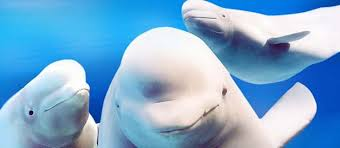

Best Ways We Can Help Our Beloved Belugas
Learn the many ways we can help our beloved beluga friends.
The Ocean Conservancy
THE FUTURE OF BELUGA WHALE CONSERVATION
Continued research is one response to these concerns and to protecting the populations in imminent peril such as Cook Inlet and the St. Lawrence Estuary. There is indeed much to be learned about the whales, their ecosystems and their interactions with humans and human activities.
But we need more than research. We already know a great deal about beluga whales, and we need to put that knowledge into action. Doing so will likely require that everyone involved—hunters, scientists, conservationists, managers—move beyond what is comfortable and familiar, working with both our allies and those who may see things differently. The alternative is for us to stay within our comfort zones while belugas are pushed farther and farther outside theirs.
Source: World Wildlife Fund
OIL AND GAS DEVELOPMENT
Vessels that support oil and gas development mean increased shipping in sensitive areas. Increased shipping means more noise that can mask communications for many Arctic marine species and it increases the potential for collisions with marine mammals, especially whales. It also brings more pollution and a greater possibility of oil or fuel spills.
CLIMATE CHANGE
Thousands of years of evolution have prepared Arctic species like the polar bear, walrus and beluga for life on and around the sea ice. Because of climate change, that ice cover has been changing rapidly, in both extent and thickness, and shrinking far too quickly for these species to adapt. A beluga’s entire life is connected to sea ice, both as a place to feed and a place to take refuge. Slow swimming beluga whales rely on sea ice as a place to hide from predators like orcas.
OCEAN NOISE
Shipping, industrial extraction, marine construction and military activities cause underwater noise pollution. Since whales depend on sound to communicate, any interference by noise pollution can negatively affect their ability to find food and mates, navigate, avoid predators and take care of their young.